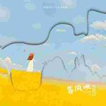
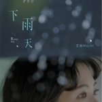
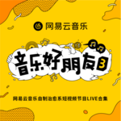
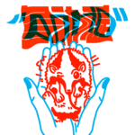

热门推荐华语|流行|古风|民谣|轻音乐更多
我也算万种风情 实非良人 |
江上寒溪凝碧 月白风清 |
仗剑行山水 诗一盏 酒一杯 |
泼墨山水下笔温柔入卷轴 |
烟雨入江南 山水如墨染 |
昔年过往可否莫做水月镜花 |
我叫长安 你叫故里 |
油纸伞 撑在雨中央 |
九万字
黄诗扶-人间不值得1赴人间
茶二娘/小田音乐社-赴人间2- 
等风吹
不是花火呀/小田音乐社-等风吹3 给你呀
蒋小呢-for ya4- 
下雨天
与少年他/芝麻Mochi-下雨天5 - 
来不及
沈以诚/音乐好朋友-音乐好朋友 第三季6 - 
多动症
刘思鉴/Lacklustrr-fxxked up7